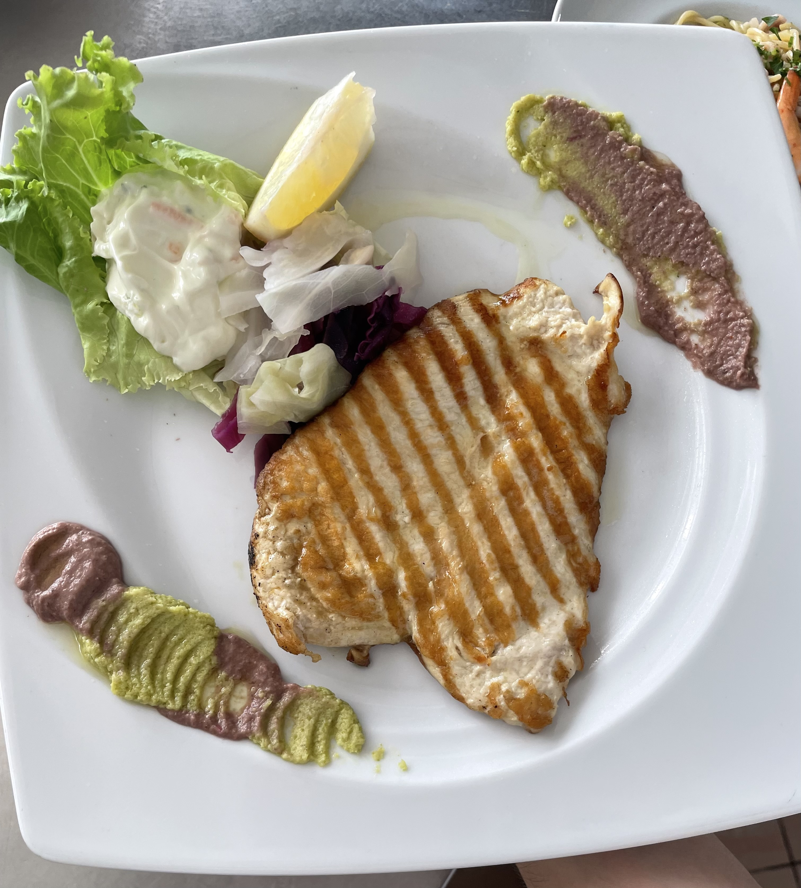
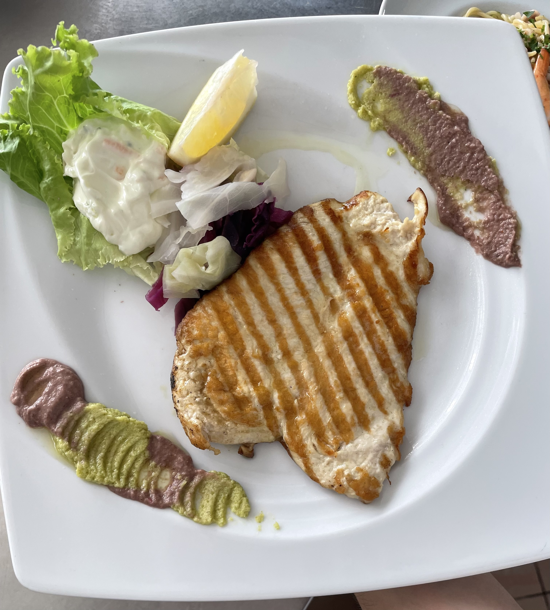

Jam një kuzhinier me pasion të madh për artin e gatimit dhe përvojë të gjerë në kuzhinën mesdhetare dhe moderne. Me mbi 8 vite eksperiencë në kuzhinë, prej të cilave 6 vite si kuzhinier i pavarur, kam zhvilluar aftësi të shkëlqyera në përgatitjen e pastave, picave, gatimeve të detit, antipastave dhe recetave tradicionale shqiptare. Jam i përkushtuar, kreativ dhe gjithmonë i hapur ndaj përmirësimit profesional.
Eksperienca profesionale
- Punonjës kuzhine – Jugu i Shqipërisë (2016-2019)
Përgatitje antipastash, brumërash dhe produkte të freskëta. Mësim i teknikave italiane. - Kuzhinier – Jugu i Shqipërisë (2020-2025)
Përgjegjës për antipasta, pica, pastat, zgarën dhe organizimin e kuzhinës. - Zgarist – Stuttgart, Gjermani (2023–2024)
Specialist i mishrave, peshkut dhe produkteve deti në zgare. Ambient me fluks të lartë klientësh.
Specializime dhe aftësitë kryesore
- Specializim në kuzhinën mesdhetare: zgara, antipasta, sallata, pasta, pizza, prodhime deti.
- Përvojë ndërkombëtare në ambiente profesionale kuzhine (Shqipëri & Gjermani).
- Aftësi menaxheriale dhe punë në ekip nën presion sezonal.
- Prezantim profesional i pjatave dhe përkushtim ndaj shijes.
- Respektim strikt i higjienës dhe standardeve të sigurisë ushqimore.
Galeria e pjatave


 



Kontakt
Email: emanuelhajdari3@gmail.com
Telefon: +355 69 585 7927